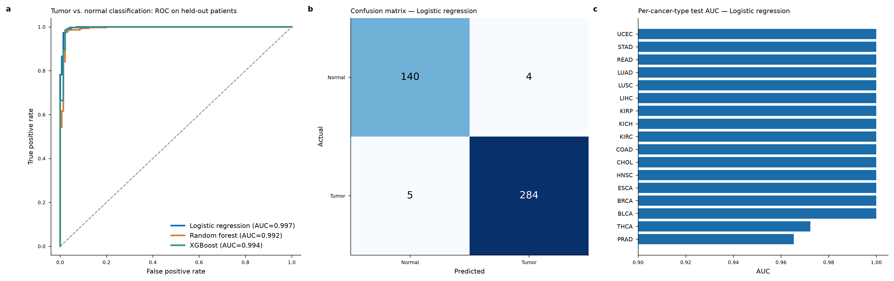
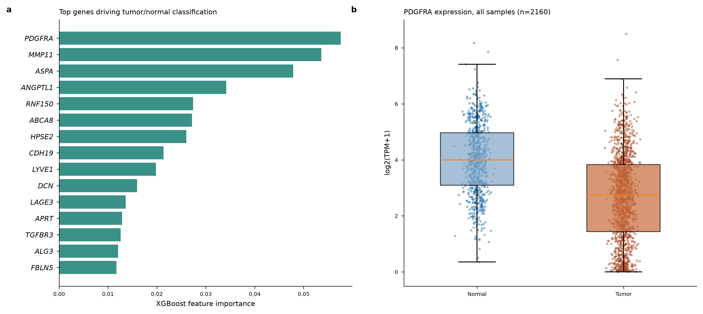

Final report — training, three-level validation, generalization to unseen cancer types, biological grounding, and a deployable scoring tool. 2,160 samples, 17 cancer types.
A logistic-regression classifier on 2,000 genes separates tumor from normal tissue at AUC 0.997 on held-out patients, holds at 0.994 when tested on a cancer type it never trained on, and reads a biologically coherent, tissue-agnostic malignant-vs-normal signature. It ships as a runnable CLI.
RNA-seq (STAR gene counts, GENCODE v36) was pulled from the NCI Genomic Data Commons for the 17 TCGA cancer types with matched primary-tumor and solid-tissue-normal samples (BRCA, KIRC, LUAD, LUSC, THCA, HNSC, LIHC, COAD, STAD, PRAD, KIRP, BLCA, UCEC, KICH, READ, ESCA, CHOL): 720 normal + 1,440 tumor = 2,160 samples, values log2(TPM+1), restricted to 14,850 expressed protein-coding genes.
Train/test was split with StratifiedGroupKFold grouped by patient so no patient's tumor and matched normal cross the boundary (the leakage failure mode for paired data), and stratified by cancer type. Features: top 2,000 genes by ANOVA F-test fit on the training set only. Models: logistic regression, random forest, XGBoost.
| Model | AUC | Accuracy | F1 | Precision | Recall |
|---|---|---|---|---|---|
| Logistic regression | 0.997 | 0.979 | 0.984 | 0.986 | 0.983 |
| Random forest | 0.992 | 0.975 | 0.981 | 0.983 | 0.979 |
| XGBoost | 0.994 | 0.982 | 0.986 | 0.990 | 0.983 |
5-fold grouped cross-validation confirms it is not a lucky split (logistic regression 0.997 ± 0.003 AUC). Per-cancer-type AUC = 1.000 on 15 of 17 types; the exceptions are PRAD (0.965) and THCA (0.972).

ROC curves, confusion matrix, and per-cancer-type AUC (model_performance.png).
The original result was measured only on cancer types also present in training. To test true generalization, the whole pipeline was retrained 17 times, each time holding out one entire cancer type (feature selection, scaling and the model all refit on the other 16) and testing only on the excluded type.
Macro-mean LOCO AUC 0.994; every held-out type stays ≥ 0.95. Largest drop vs within-distribution is 0.015 (PRAD).
Discrimination (AUC) is near-perfect, but the decision boundary learned on other cancer types does not always transfer: prostate (0.75) and liver (0.85) are under-called at 0.5. Re-thresholding each tissue at its own optimal cutoff recovers accuracy to the AUC ceiling (PRAD 0.75→0.94, LIHC 0.85→0.99, STAD 0.91→1.00). Practical rule: for a genuinely new tissue, recalibrate the threshold on a few labeled samples.
The top genes match published pan-cancer signatures — and reveal a bidirectional, tissue-agnostic contrast, which is why it generalizes across cancer types. Full citations in LITERATURE_CHECK.md.
ECM remodeling / cancer-associated-fibroblast / desmoplasia
loss of normal architecture / microvasculature / tumor suppressors
tumor = (desmoplastic ECM / CAF program UP) + (normal tissue & vascular markers DOWN) — a shared malignant-vs-normal tissue state, not per-cancer memorization. This is the mechanistic reason the leave-one-cancer-type-out test holds.

Top gene importances and PDGFRA expression by group (feature_importance.png).
The fitted pipeline scores new samples. Verified to reproduce the reported performance (test AUC 0.997) on held-out data.
python score_tumor_normal.py expr.csv -o calls.csv # logistic regression (best) python score_tumor_normal.py expr.csv --threshold 0.4 # recalibrate for a new tissue python score_tumor_normal.py example_input.csv # runnable demo (5 samples)
Input: rows = samples, columns = genes (Ensembl IDs, log2(TPM+1)); output: sample, tumor_probability, call. The demo scores 3 tumors at p>0.99 and 2 normals at p<0.06, matching their true labels. See README.md.
score_tumor_normal.py, example_input.csv/example_output.csv, README.md — the scoring tooldeployable_pipeline.pkl — fitted selector + scaler + models + 2,000-gene listREPORT.md — full methods/results; LITERATURE_CHECK.md — gene-by-gene citationsmodel_performance.png, feature_importance.png — primary figurescross-cancer-holdout/ — LOCO analysis (LOCO_REPORT.md, loco_report.html, per-cancer CSVs, pooled predictions)from-workbench-loco/ — the Claude Science workbench's own LOCO run + optimal-threshold CSVs (agrees with the above)test_metrics.csv, per_cancer_type_performance.csv, top_genes_*.csv, selected_files.csvValidated three ways: patient-held-out AUC 0.997 · 5-fold grouped CV 0.997±0.003 · cancer-type-held-out AUC 0.994.